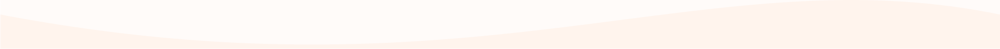
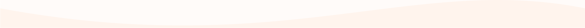
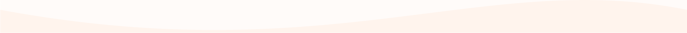
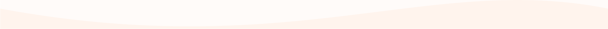

奈良の魅力にとりつかれた移住者とともに新たな日常を発見するフリーペーパーです。彼らは仕方なく奈良に来たのか。どうして奈良だったのか。窓の外から聞こえてくる声に耳を傾けてみませんか？
記念すべき第一号では、移住者2人にインタビュー。その中から本屋を営むヌリ平さんがなぜ奈良に来たのかを試し読みすることができます。奈良の魅力に取り憑かれた移住者の声を聞いてみましょう。
サブタイトルに込められた思いや編集者達の声を聞いてみましょう。最新号のフリーペーパーの発行日や設置店舗の情報も。フリーペーパーを探しに、新しい日常を探しに。あなたも奈良を散歩しませんか？
 


